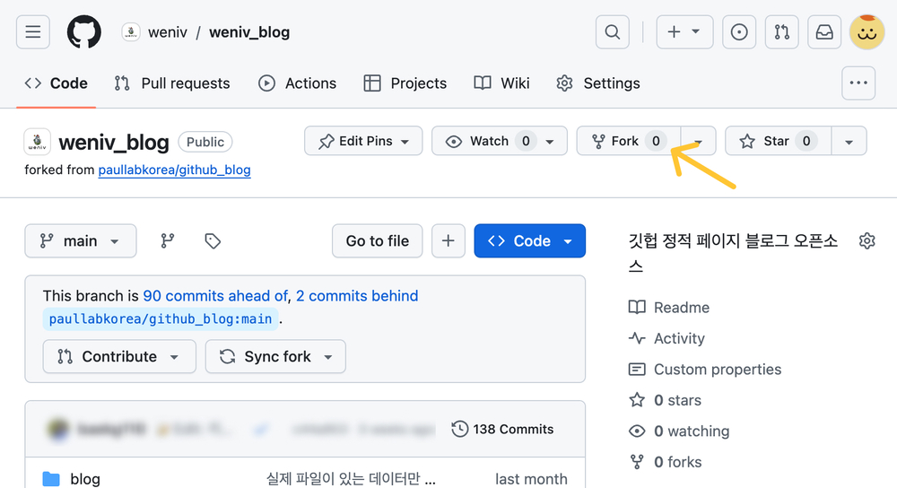
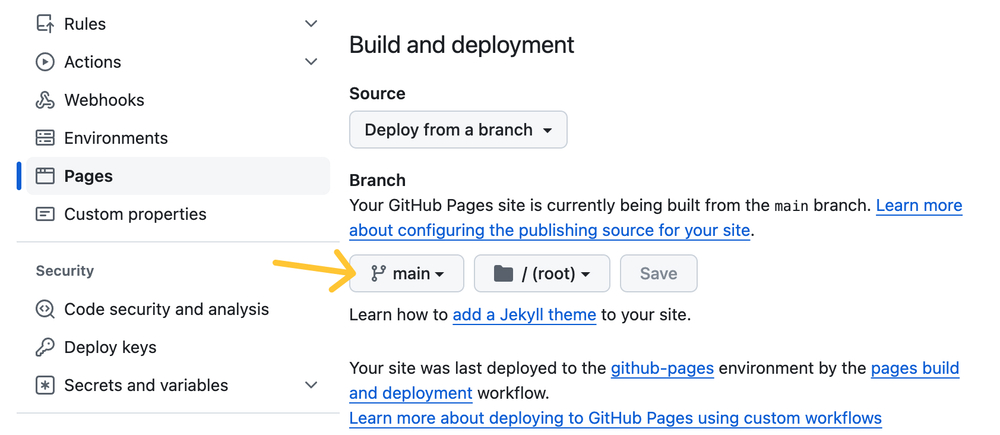
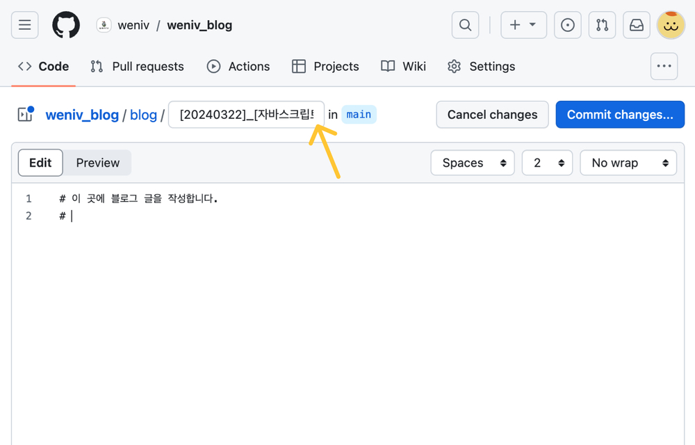

wenivlog 소개
GitHub Blog 만들기에 어려움이 있으셨나요?
wenivlog를 사용해
보세요!
GitHub Pages를 이용하여
나만의 정적 블로그를
쉽게 구현할 수 있어요
- 나만의 개발 블로그를 만들어보고 싶었던 분
- Jekyll 을 이용해 블로그를 만드는데 어려움을 느끼셨던 분
- 블로그 글도 쓰면서 GitHub 잔디도 심고 싶으신 분
- 매일 TIL (*Today I Learned)을 작성하고 싶으신 분
사용 방법
사용 방법을 알려드릴게요
“차근차근 따라하면 나만의 GitHub Blog 탄생!”
-
제공된 레포지토리를 fork 합니다.링크 바로가기 
-
내 레포지토리의 github pages를 활성화합니다.
-
레포지토리에 마크다운으로 블로그 글을 작성합니다.
blog 폴더에 파일을 추가하며파일 이름은 다음 양식으로 작성합니다.
[작성일]_[제목]_[카고테리]_[썸네일 이미지 링크]_[설명].md

기능 소개
이런 기능도 제공해요
개성 넘치는 나만의 블로그를 만들어보세요!
-
#커스터마이징
config.js를 이용하여 블로그의 제목과 사용자 정보를 변경할 수 있어요.
-
#커스터마이징
Tailwind CSS를 이용하여 globalStyle.js를 수정하여 전반적인 블로그의 스타일을 수정할 수 있어요.
-
#에셋 제공
위니브 프렌즈의 얼굴을 담은 프로필 이미지를 제공해요.
-
#에셋 제공
기본 썸네일 이미지를 제공해요. 글 파일을 작성할 때 썸네일 이미지 링크를 비워두면 랜덤으로 이미지가 적용돼요.
지금 바로 나만의 GitHub Blog를 만들어 보세요
wenivlog와 함께라면 어렵지 않아요 :)
블로그 만들기